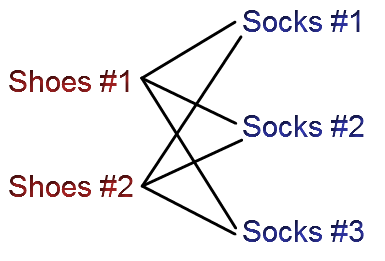

Introduction to Probability Models
Lecture 8
Qi Wang, Department of Statistics
Sep 7, 2018
Reminders
- The first homework is due NOW
- The second quiz will be on this Wednesday(Sep 12)
Basic Counting Rules
If there are a ways of doing something and b ways of doing another thing,
then there are a · b ways of performing both actions.

Example 1
Assuming Mary has 6 pairs of shoes, 10 different tops,
8 different bottoms and 4 different jackets.
- How many different outfits can she wear?
- Mary has a job interview and she wants to decide what to wear.
Of all her clothes, Mary has 2 pairs of shoes, 3 tops, 2 bottoms
and 2 jackets that are appropriate for an interview.
She randomly picks what to wear for the interview among
all her possible outfits, what is the probability that s
he wears an interview-appropriate outfit?
Example 2
lllinois license plates consist of 4 digits followed by 2 letters.
Whereas, in Ohio, license plates start with 3 letters and end with 4 digits.
Assume all letters are upper case.(note: the license plate scheme described may not
reflect the current Illinois or Ohio license plates)
- For each state, how many possible license plates are there?
- How many possible license plates are there for each state with no digit or letter repeating?
- How many possible license plates are there with at least 1 vowel?
- How many possible license plates are there with at least one vowel or at least one 3?
- What is the probability that the license plate will have at least one vowel?
Two concepts
- Factorial Notation: $k!$ means multiple the positive integer $k$
by $k - 1, k-2, \cdots, $ until 1
\begin{align}
k! =& k\times (k-1) \times \cdots \times 2 \times 1 \\
6! =& 6 \times 5 \times 4 \times 3 \times 2 \times 1 = 720
\end{align}
- Permutation: Ordered arrangement of r distinct objects
from a set of n objects.
$$_nP_r = P_r^n = \frac{n!}{(n - r)!}$$
$$_5P_2 = P_2^5 = \frac{5!}{(5 - 2)!} = \frac{5!}{3!} = 20$$
Example 3
Suppose Krannert only allows 5 spaces for a password to Portals.
Suppose further you are only allowed to use a number or a letter,
but the system is not case sensitive.
- How many possible passwords are there?
- What is the probability that you do not have a 9 in the first position?
- What is the probability that all 5 spaces are odd numbers? What if you cannot have a 9 in the first space?
- What is the probability that a password does not repeat any characters?
- What is the probability that the first space is a letter?
- What is the probability that the $4_{th}$ space is an even number?
- What is the probability that the last two spaces are vowels, if repeats are allowed?
If repeats are not allowed?
- What is the probability that the password has at least one letter?